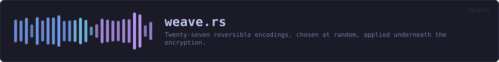

crates/veilvoice-crypto/src/weave.rs
veilvoice-crypto · 1727 lines · read the source here · or on GitHub
Thirty-one reversible encodings, chosen at random, applied around the encryption -- before it, after it, or both.
What this buys, and it is not what it looks like
Say the disappointing part first, because the alternative is letting a reader assume it.
This adds no cryptographic strength. Every record here is sealed with ChaCha20-Poly1305, whose output is already indistinguishable from random to anybody without the key. Encoding the plaintext before encrypting it does not make that ciphertext harder to break, and anybody who tells you a layer of base91 under an AEAD is "double encryption" is wrong. If the only thing standing between an attacker and your data were the encoding, the answer would be: that is not security, it is a puzzle.
So the honest list of what it does buy, all of it smaller than the previous paragraph is big:
- Plaintext that leaks by a route other than the AEAD is not readable. A core dump, a swap file, a page that was written before the seal, a future bug in this crate's own framing -- any of those hands somebody the plaintext buffer.
frame_ms = 4.25in that buffer is a sentence. The same record base91-ed under a move-to-front transform is not, and cannot be grepped for. - After a key compromise there is one more step. Small, and worth naming as small: somebody with the passphrase reads the encoding marker in the first byte and undoes it. It costs them a minute, not a month.
- A partially-recovered record does not read as text. Truncated or damaged plaintext that decodes to nothing is better than truncated plaintext that decodes to half your settings.
That is the whole claim. It is defence in depth against exposure that does not go through the cipher, not a second cipher.
It is nowhere near the live path, and adds no lag
These run only when VeilVoice writes one of its own small files -- settings, measurements, the integrity record. They never touch a sample of audio. The DSP and capture crates do not name this module, and cannot, because it is not in their dependency graph. So "does the encoding slow down the live scramble" has a structural answer rather than a benchmarked one: the code that would slow it down is not reachable from it.
Even where they do run, the input is kilobytes and the transforms are a single linear pass, so the cost is lost in the Argon2id run the same unlock already pays for.
Names are different, and the difference matters
A record's filename is 18 bytes of HMAC, base64url-encoded to exactly 24 characters. Weaving those bytes first is fine -- but only with a codec that preserves length.
If a name could be hex-encoded it would come out 48 characters instead of 24, and the length of the filename would announce which encoding was used. Worse, decoys are random bytes with a random weave while records have a key-derived one, so a length difference would separate the two at a glance and undo the entire point of the decoys.
So names use LENGTH_PRESERVING only, and the choice is derived from the key rather than drawn at random, because a name has to be computable again next time. Contents may use anything, because contents are padded to fixed buckets afterwards.
One honest consequence of that padding: an expanding codec can push a record into a larger bucket than a compact one would, so writing the same data twice can produce two different file sizes. That reveals nothing about the data -- only that the encoding changed -- and it is the reason bucket sizes are coarse.
In plain words
Before VeilVoice encrypts one of its own files, it scrambles the contents into one of twenty-seven odd formats picked at random, and does something similar to the filename.
It is not what keeps the file secret. The encryption does that. This means that if the unencrypted contents ever escape some other way -- a crash dump, a swap file -- what escapes does not read as anything.
WHAT THIS FILE CONTAINS
1727 lines defining 21 functions (10 public), 1 type and 18 constants. Everything below is read out of the source, so it cannot disagree with the code.
The types it owns.
enum Weaveline 90 · Every encoding, by name.
What happens when it runs. These are the ways in: public, and nothing else in this file calls them, so they are what an outside caller reaches first.
Weave::idline 227 · The marker stored with a record so the encoding can be undone.Weave::from_idline 264 · Recover an encoding from its marker.Weave::preserves_lengthline 302 · Whether this leaves the byte count untouched.Weave::random_length_preservingline 330 · Pick one at random from the length-preserving set.Weave::for_nameline 356 · Pick one deterministically from key material, from LENGTH_PRESERVING.Weave::applyline 366 · Encode.
reachesbase32_encode,base45_encode,base85_encode,base91_encode,sixbit_encodeWeave::undoline 545 · Decode.
reachesbase32_decode,base45_decode,base85_decode,base91_decode,nibble,sixbit_decodeencodeline 728 · Encode with a randomly chosen encoding, returning it so it can be undone.
reachesrandomdecodeline 734 · Undo encode.
WHAT CALLS WHAT
The functions this file defines, and the calls between them. An edge means the callee's name appears, called, inside the caller's body. This is a syntactic reading, not a type-resolved one.
The same graph as Mermaid source
%%{init: {"theme":"base","themeVariables":{"background":"#1a1b26","primaryColor":"#1f2335","primaryTextColor":"#c0caf5","primaryBorderColor":"#7aa2f7","secondaryColor":"#16161e","tertiaryColor":"#16161e","lineColor":"#737aa2","textColor":"#c0caf5","mainBkg":"#1f2335","nodeBorder":"#7aa2f7","clusterBkg":"#16161e","clusterBorder":"#2f3549","fontFamily":"ui-monospace, SFMono-Regular, Consolas, monospace","fontSize":"14px"}}}%%
flowchart TD
n_id(["Weave::id<br/>line 227"])
n_from_id(["Weave::from_id<br/>line 264"])
n_preserves_length(["Weave::preserves_length<br/>line 302"])
n_random_length_preserving(["Weave::<br/>random_length_preserving<br/>line 330"])
n_random["Weave::random<br/>line 342"]
n_for_name(["Weave::for_name<br/>line 356"])
n_apply(["Weave::apply<br/>line 366"])
n_undo(["Weave::undo<br/>line 545"])
n_encode(["encode<br/>line 728"])
n_decode(["decode<br/>line 734"])
n_nibble["nibble<br/>line 741"]
n_base32_encode["base32_encode<br/>line 793"]
n_base32_decode["base32_decode<br/>line 816"]
n_base45_encode["base45_encode<br/>line 843"]
n_base45_decode["base45_decode<br/>line 863"]
n_base85_encode["base85_encode<br/>line 890"]
n_base85_decode["base85_decode<br/>line 914"]
n_base91_encode["base91_encode<br/>line 956"]
n_base91_decode["base91_decode<br/>line 987"]
n_sixbit_encode["sixbit_encode<br/>line 1015"]
n_sixbit_decode["sixbit_decode<br/>line 1036"]
n_apply --> n_base32_encode
n_apply --> n_base45_encode
n_apply --> n_base85_encode
n_apply --> n_base91_encode
n_apply --> n_sixbit_encode
n_encode --> n_random
n_undo --> n_base32_decode
n_undo --> n_base45_decode
n_undo --> n_base85_decode
n_undo --> n_base91_decode
n_undo --> n_nibble
n_undo --> n_sixbit_decode
click n_id href "https://github.com/tilas01/veilvoice/blob/main/crates/veilvoice-crypto/src/weave.rs#L227" "open the source"
click n_from_id href "https://github.com/tilas01/veilvoice/blob/main/crates/veilvoice-crypto/src/weave.rs#L264" "open the source"
click n_preserves_length href "https://github.com/tilas01/veilvoice/blob/main/crates/veilvoice-crypto/src/weave.rs#L302" "open the source"
click n_random_length_preserving href "https://github.com/tilas01/veilvoice/blob/main/crates/veilvoice-crypto/src/weave.rs#L330" "open the source"
click n_random href "https://github.com/tilas01/veilvoice/blob/main/crates/veilvoice-crypto/src/weave.rs#L342" "open the source"
click n_for_name href "https://github.com/tilas01/veilvoice/blob/main/crates/veilvoice-crypto/src/weave.rs#L356" "open the source"
click n_apply href "https://github.com/tilas01/veilvoice/blob/main/crates/veilvoice-crypto/src/weave.rs#L366" "open the source"
click n_undo href "https://github.com/tilas01/veilvoice/blob/main/crates/veilvoice-crypto/src/weave.rs#L545" "open the source"
click n_encode href "https://github.com/tilas01/veilvoice/blob/main/crates/veilvoice-crypto/src/weave.rs#L728" "open the source"
click n_decode href "https://github.com/tilas01/veilvoice/blob/main/crates/veilvoice-crypto/src/weave.rs#L734" "open the source"
click n_nibble href "https://github.com/tilas01/veilvoice/blob/main/crates/veilvoice-crypto/src/weave.rs#L741" "open the source"
click n_base32_encode href "https://github.com/tilas01/veilvoice/blob/main/crates/veilvoice-crypto/src/weave.rs#L793" "open the source"
click n_base32_decode href "https://github.com/tilas01/veilvoice/blob/main/crates/veilvoice-crypto/src/weave.rs#L816" "open the source"
click n_base45_encode href "https://github.com/tilas01/veilvoice/blob/main/crates/veilvoice-crypto/src/weave.rs#L843" "open the source"
click n_base45_decode href "https://github.com/tilas01/veilvoice/blob/main/crates/veilvoice-crypto/src/weave.rs#L863" "open the source"
click n_base85_encode href "https://github.com/tilas01/veilvoice/blob/main/crates/veilvoice-crypto/src/weave.rs#L890" "open the source"
click n_base85_decode href "https://github.com/tilas01/veilvoice/blob/main/crates/veilvoice-crypto/src/weave.rs#L914" "open the source"
click n_base91_encode href "https://github.com/tilas01/veilvoice/blob/main/crates/veilvoice-crypto/src/weave.rs#L956" "open the source"
click n_base91_decode href "https://github.com/tilas01/veilvoice/blob/main/crates/veilvoice-crypto/src/weave.rs#L987" "open the source"
click n_sixbit_encode href "https://github.com/tilas01/veilvoice/blob/main/crates/veilvoice-crypto/src/weave.rs#L1015" "open the source"
click n_sixbit_decode href "https://github.com/tilas01/veilvoice/blob/main/crates/veilvoice-crypto/src/weave.rs#L1036" "open the source"
classDef entry fill:#1f2335,stroke:#7aa2f7,color:#c0caf5
class n_id,n_from_id,n_preserves_length,n_random_length_preserving,n_for_name,n_apply,n_undo,n_encode,n_decode entry
classDef api fill:#1f2335,stroke:#7dcfff,color:#c0caf5
class n_random api
classDef helper fill:#1f2335,stroke:#bb9af7,color:#c0caf5
class n_nibble,n_base32_encode,n_base32_decode,n_base45_encode,n_base45_decode,n_base85_encode,n_base85_decode,n_base91_encode,n_base91_decode,n_sixbit_encode,n_sixbit_decode helperThis site loads no third-party script, so it cannot run Mermaid; the diagram above is the same nodes and edges drawn by the generator instead. GitHub renders the source below directly.
ITEMS
| Item | Line | Documentation |
|---|---|---|
Weave pub enum | 90 | Every encoding, by name. |
LENGTH_PRESERVING pub const | 167 | Every encoding that leaves the byte count alone. |
ALL pub const | 188 | Every encoding, for contents. |
Weave::id pub fn | 227 | The marker stored with a record so the encoding can be undone. |
Weave::from_id pub fn | 264 | Recover an encoding from its marker. |
Weave::preserves_length pub fn | 302 | Whether this leaves the byte count untouched. |
Weave::random_length_preserving pub fn | 330 | Pick one at random from the length-preserving set. |
Weave::random pub fn | 342 | Pick one at random, from ALL. |
Weave::for_name pub fn | 356 | Pick one deterministically from key material, from LENGTH_PRESERVING. |
Weave::apply pub fn | 366 | Encode. |
Weave::undo pub fn | 545 | Decode. |
encode pub fn | 728 | Encode with a randomly chosen encoding, returning it so it can be undone. |
decode pub fn | 734 | Undo encode. |
nibble fn | 741 | One hex digit as a number, in either case. |
HEX const | 750 | |
HEX_UPPER const | 751 | |
B32 const | 752 | |
B32HEX const | 753 | |
ZB32 const | 754 | |
CROCKFORD const | 755 | |
B45 const | 756 | |
A85 const | 757 | |
Z85A const | 758 | |
UU const | 759 | |
XX const | 760 | |
XX_ALPHABET const | 761 | |
Z85_ALPHABET const | 762 | |
SBOX const | 769 | A fixed permutation of every byte value, and its inverse. |
UNSBOX const | 779 | |
base32_encode fn | 793 | Five bytes to eight characters, over whichever 32-character alphabet was chosen. |
base32_decode fn | 816 | Undo base32_encode over the same alphabet. |
base45_encode fn | 843 | Two bytes to three characters, over the 45-character alphabet the QR standard uses. |
base45_decode fn | 863 | Undo base45_encode. |
base85_encode fn | 890 | Four bytes to five characters. |
base85_decode fn | 914 | Undo base85_encode with the same flavour and offset. |
B91 const | 951 | |
base91_encode fn | 956 | Thirteen or fourteen bits at a time, over 91 characters, which is the densest of these that stays printable ASCII. |
base91_decode fn | 987 | Undo base91_encode. |
sixbit_encode fn | 1015 | Three bytes to four characters over a 64-character alphabet, in the shape uuencode and xxencode use. |
sixbit_decode fn | 1036 | Undo sixbit_encode with the same flavour. |